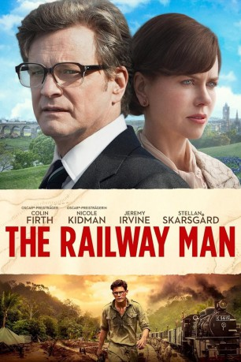
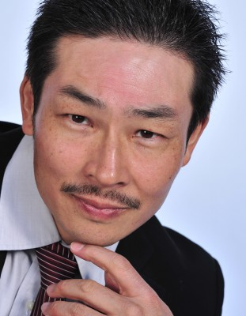

#2556 Die Liebe seines Lebens
Alternativ: Railway Man, The
 
 IMDB-Wertung: 7.1 / 10
IMDB-Wertung: 7.1 / 10  Metascore: 59
Metascore: 59 
Der schottische Offizier Eric Lomax gerät während des Zweiten Weltkriegs in japanische Gefangenschaft und wird in ein Kriegsgefangenenlager nach Thailand verfrachtet. Dort werden die Gefangenen bei schlechter Versorgung gezwungen, den Bau einer Eisenbahnstrecke voranzutreiben. Wegen der vielen Todesopfer, die die Arbeit fordert, wird die Strecke auch Todeseisenbahn genannt. Nachdem Lomax sich zunächst weigert zu arbeiten, wird er von dem jungen japanischen Soldaten Nagase so lange gefoltert, bis er schließlich nachgibt. Er überlebt die Tortur, doch ist nie in der Lage die Pein zu vergessen, die ihm zugefügt wurde. Seine Frau Patricia leidet mit ihm und findet nach einem mentalen Zusammenbruch Erics schließlich heraus, dass Nagase noch am Leben ist. Als sie Eric davon berichtet, beschließt dieser Nagase aufzusuchen, um endlich mit seiner Vergangenheit abzuschließen.
Jahr: 2013
Dauer: 116 Minuten
FSK:
Land: Australien Studio: Koch MediaTonspuren: DTS - ,
Untertitel: Deutsch,
Auflösung: 1080p (1920x800) Größe: 5724 MB
Genre: Biographie, Drama, Liebe, Krieg
Regisseur: Jonathan Teplitzky
Drehbuch: Frank Cottrell Boyce, Andy Paterson, Eric Lomax
Soundtrack: David Hirschfelder
Darsteller:
 Jeremy Irvine als Young Eric
Jeremy Irvine als Young Eric Colin Firth als Eric
Colin Firth als Eric Stellan Skarsgård als Finlay
Stellan Skarsgård als Finlay Nicole Kidman als Patti
Nicole Kidman als Patti- Tanroh Ishida als Young Takeshi Nagase
- Tom Stokes als Withins
- Tom Hobbs als Thorlby
 Sam Reid als Young Finlay
Sam Reid als Young Finlay- Akos Armont als Jackson
 Ben Aldridge als Baliff
Ben Aldridge als Baliff-  Yutaka Izumihara als Japanese NCO
- Micheal Doonan als Doctor Rogers
- Keiichi Enomoto als Sakamoto
- Masa Yamaguchi als Kempei Officer
 Hiroyuki Sanada als Takeshi Nagase
Hiroyuki Sanada als Takeshi Nagase Ewen Leslie als Captain Thompson
Ewen Leslie als Captain Thompson- Shinji Ikefuji als Thug Sergeant
- Jack McTaggart als Australian Soldier
- Therese Bradley als Mother
- Ray Crofter als War Veteran #4 , uncredited
- Marta Dusseldorp als Memsahib , uncredited
- Anthony Miller als British Liasion Major Miller , uncredited
- Anteo Quintavalle als POW '2' , uncredited
- Ben Rossberg als POW / Medic , uncredited
 Charlie Ruedpokanon als Japanese Guard , uncredited
Charlie Ruedpokanon als Japanese Guard , uncredited Ron Smoorenburg als Sergeant , uncredited
Ron Smoorenburg als Sergeant , uncredited- Taka Uematsu als Warrant officer , uncredited
 Ken Watanabe als Japanese Guard , uncredited
Ken Watanabe als Japanese Guard , uncredited- Michael MacKenzie als Sutton
- Jeffrey Daunton als Burton
 Bryan Probets als Major York
Bryan Probets als Major York- Takato Kitamoto als Japanese Officer
- Keith Fleming als Removal Man
- Louis Toshio Okada als Hank the Yank
- Shoota Tanahshi als Japanese Mechanic
- Peter Tuinstra als Pump Operator
- Shogo Tanikawa als Japanese Engineer
- Ben Warren als Cook
- Yasuhiko Miyauchi als Japanese Sergeant
- Sarah McVicar als Nurse
- Byron J. Brochmann als British Trooper POW , uncredited
- David Firestar als Tourist , uncredited
- Eric Lomax als Himself , uncredited
- Glenna Morrison als Mrs.Margery Lomax , uncredited
- Takashi Nagase als Himself , uncredited
- Koichi Waki als Slap Thorlby Japanese Sergeant , uncredited
- Matthew Wollaston als Eric's carriage , uncredited
- Takashi Yamaguchi als Japanese Guard , uncredited
- Toshi Yoshino als Japanese Guard , uncredited
Datei: X:\2013(I-M)\Liebe seines Lebens, Die (2013, FSK, 1920x800).mkv seit 22.11.2015
Festplatte: HD 2013(I-Z)-2014(A-Z)
 Es gibt insgesamt 89 Filme in der Gruppe '2013(I-M)'
Es gibt insgesamt 89 Filme in der Gruppe '2013(I-M)'